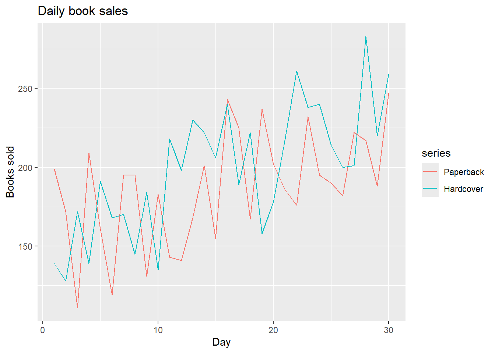
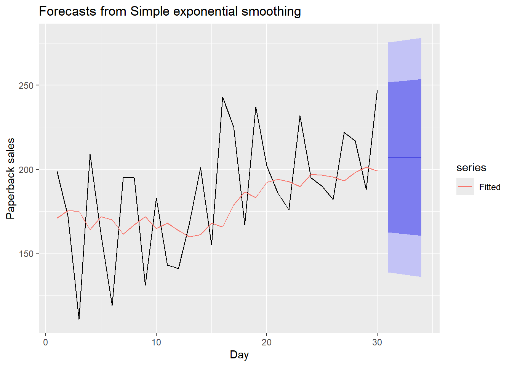
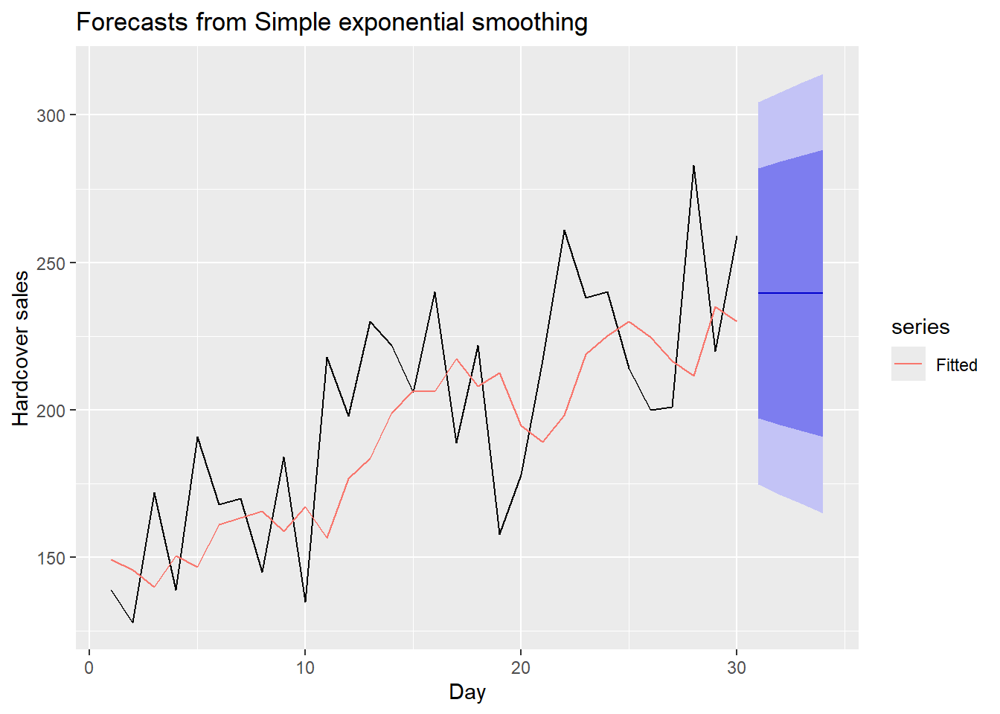
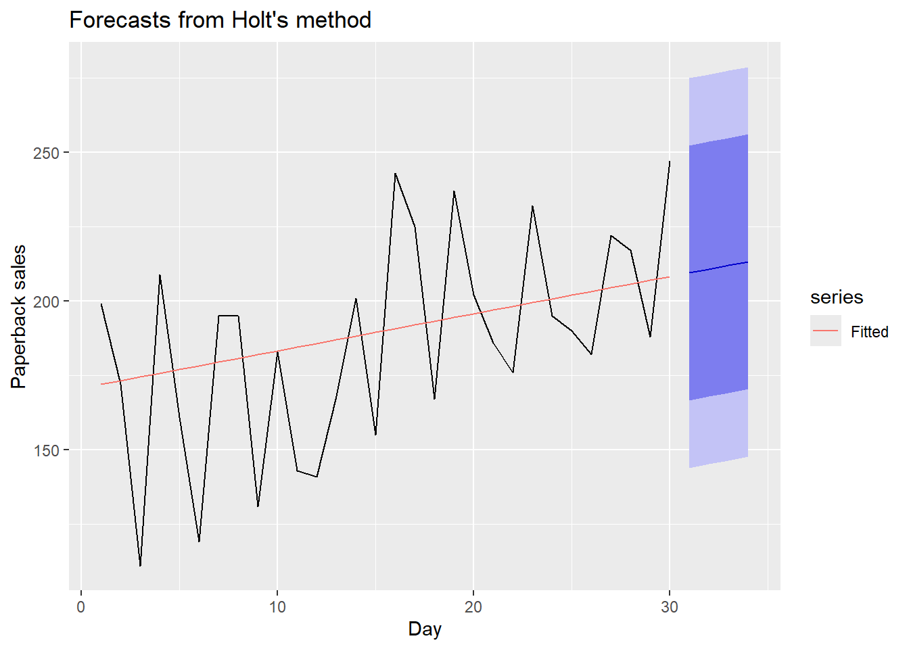
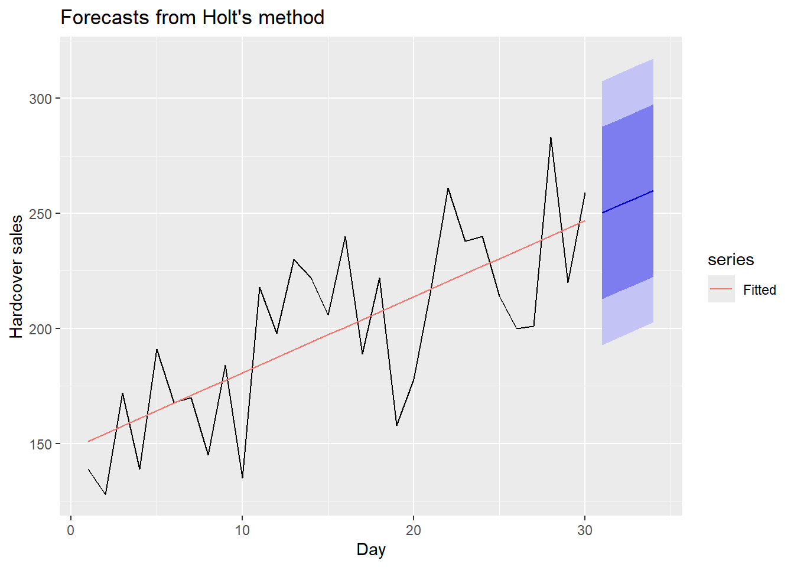
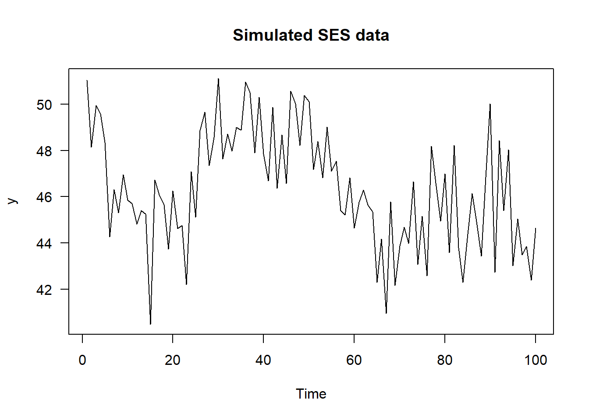
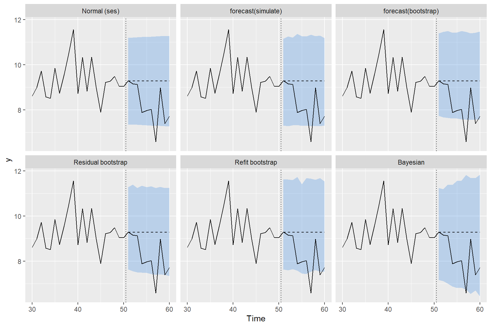

Code
library(fpp2)
library(forecast)
library(knitr)
# Helper used in the text
f2 <- function(x, d = 2) formatC(x, format = "f", digits = d)Section 2: Exponential smoothing, state-space and hidden Markov models
Topics covered: Simple exponential smoothing, Holt and Holt-Winters methods, ETS models and their prediction intervals.
Data: marathon (Boston Marathon men’s winning times, 1897–2016), oil (annual oil production in Saudi Arabia) and books (daily paperback and hardcover sales over 30 days), all from the fpp2 package, plus data simulated from the SES state-space model. Packages: fpp2, forecast, knitr.
Simple exponential smoothing (SES) forecasts the next observation as a weighted average of all past observations, with weights that shrink geometrically the further back you go:
\[ \hat y_{t+1|t} = \alpha y_t + \alpha(1-\alpha) y_{t-1} + \alpha(1-\alpha)^2 y_{t-2} + \dots \]
Taking out the first term shows that the rest is just the previous forecast, so the whole history can be carried in one number, the level:
\[ \ell_t = \alpha y_t + (1-\alpha)\ell_{t-1}, \qquad \hat y_{t+h|t} = \ell_t . \]
The forecast is flat for every horizon \(h\). A large \(\alpha\) means the level reacts quickly to new data, and a small \(\alpha\) means it moves slowly. The two unknowns, \(\alpha\) and the starting level \(\ell_0\), are estimated by minimising the sum of squared one-step errors (SSE).
Holt’s method adds a trend with its own smoothing parameter \(\beta\) and starting slope \(b_0\), so the forecasts carry on in a straight line. Holt–Winters adds a seasonal component on top of that. Each component is updated as a weighted average of the new evidence and its previous estimate.
Rewriting SES in error-correction form, \(y_t = \ell_{t-1} + e_t\) and \(\ell_t = \ell_{t-1} + \alpha e_t\) with \(e_t \sim N(0, \sigma^2)\), turns the method into a statistical model, ETS(A,N,N). That is what gives us \(\sigma\), prediction intervals with variance \(\sigma^2[1 + (h-1)\alpha^2]\), and a way to simulate data.
data = marathon
SSE <- function(pars, y) {
level0 <- pars[1]
alpha <- pars[2]
n <- length(y)
yhat <- numeric(n)
level <- numeric(n)
yhat[1] <- level0
for (i in 1:(n)) {
level[i] <- alpha * y[i] + (1- alpha) * yhat[i]
yhat[i+1] <- level[i]
}
SSE <- sum((y - yhat[1:n])^2)
return(SSE)
}
inits <- c(data[1], 0.5)
(ses.est <- optim(par = inits, fn = SSE, y = data))$par
[1] 167.1677433 0.3456196
$value
[1] 3594.147
$counts
function gradient
67 NA
$convergence
[1] 0
$message
NULL# Forecast function: same loop as SSE(), different inputs and output
ses_forecast <- function(y, alpha, level) {
n <- length(y)
yhat <- numeric(n + 1)
yhat[1] <- level
for (i in 1:n) {
yhat[i+1] <- alpha * y[i] + (1 - alpha) * yhat[i]
}
return(yhat[n+1]) # the prediction for the next year (2017)
}
# My forecast, using the alpha and l0 that optim found
my_fc <- ses_forecast(y = data,
alpha = ses.est$par[2],
level = ses.est$par[1]) mine ses
130.3559 130.3563 Both ways if building the SES give the same result. we expect the next winner to have a time of 130.36 minutes in the race, with h = 1, h is showing the horizon by one.
Forecast method: Simple exponential smoothing
Model Information:
Simple exponential smoothing
Call:
ses(y = data)
Smoothing parameters:
alpha = 0.3457
Initial states:
l = 167.1741
sigma: 5.519
AIC AICc BIC
988.4474 988.6543 996.8099
Error measures:
ME RMSE MAE MPE MAPE MASE
Training set -0.8874349 5.472771 3.826294 -0.7097395 2.637644 0.8925685
ACF1
Training set -0.01211236
Forecasts:
Point Forecast Lo 80 Hi 80 Lo 95 Hi 95
2017 130.3563 123.2835 137.4292 119.5394 141.1733
2018 130.3563 122.8727 137.8399 118.9111 141.8015
2019 130.3563 122.4833 138.2293 118.3156 142.3970
2020 130.3563 122.1123 138.6003 117.7482 142.9644
2021 130.3563 121.7573 138.9553 117.2053 143.5074
2022 130.3563 121.4164 139.2963 116.6839 144.0288
2023 130.3563 121.0880 139.6247 116.1816 144.5310
2024 130.3563 120.7708 139.9418 115.6966 145.0161
2025 130.3563 120.4639 140.2488 115.2271 145.4856
2026 130.3563 120.1661 140.5466 114.7717 145.9409[1] 119.5387 141.1730Yes, the confidence intervals are the same
We use the one step ahead forecast as fitted values
Forecast method: Simple exponential smoothing
Model Information:
Simple exponential smoothing
Call:
ses(y = oil, h = 4)
Smoothing parameters:
alpha = 0.9999
Initial states:
l = 110.8832
sigma: 49.0507
AIC AICc BIC
576.1569 576.6903 581.8324
Error measures:
ME RMSE MAE MPE MAPE MASE ACF1
Training set 8.806147 48.03921 35.52053 2.135668 10.73828 0.9796835 0.1646214
Forecasts:
Point Forecast Lo 80 Hi 80 Lo 95 Hi 95
2014 542.3412 479.4802 605.2022 446.2037 638.4788
2015 542.3412 453.4468 631.2356 406.3890 678.2935
2016 542.3412 433.4701 651.2124 375.8372 708.8453
2017 542.3412 416.6287 668.0537 350.0805 734.6019 alpha l
0.9999 110.8832 # 95% intevral
y_hat_1 <- ses_model$mean[1] # first point forecast
res <- residuals(ses_model) # one-step-ahead errors
s <- sd(res) # sd of the residuals (as the question says)
my_lower <- y_hat_1 - 1.96 * s
my_upper <- y_hat_1 + 1.96 * s
# ses function lower and upper
r_lower <- ses_model$lower[1, "95%"]
r_upper <- ses_model$upper[1, "95%"]
# 5. Compare
rbind(by_hand = c(lower = my_lower, upper = my_upper),
R = c(lower = r_lower, upper = r_upper)) lower upper
by_hand 448.8206 635.8618
R 446.2037 638.4788alpha = 0.999
l = 110.888
# Subset: 1996-2013
oil_sub <- window(oil, start = 1996, end = 2013)
# SSE function: same loop as the forecast function, but returns the SSE
ses_sse <- function(pars, y) {
level <- pars[1]
alpha <- pars[2]
n <- length(y)
yhat <- numeric(n + 1)
yhat[1] <- level
for (i in 1:n) {
yhat[i+1] <- alpha * y[i] + (1 - alpha) * yhat[i]
}
sum((y - yhat[1:n])^2)
}
# Estimate l0 and alpha with optim
inits <- c(oil_sub[1], 0.5)
opt <- optim(par = inits, fn = ses_sse, y = oil_sub,
lower = c(-Inf, 0.0001), upper = c(Inf, 0.9999))
opt$par[1] 446.5754462 0.8338438 alpha l
0.8338901 446.5867935 l0 alpha
optim 446.5754 0.8338438
ses 446.5868 0.8338901
alpha l
0.1685372 170.8270654 alpha l
0.3282665 149.2861389 

paperback hardcover
33.63769 31.93101 [1] 33.63769[1] 31.93101 alpha beta l b
1.000143e-04 1.000009e-04 1.706990e+02 1.262126e+00 alpha beta l b
1.000163e-04 1.000004e-04 1.477935e+02 3.303008e+00 

SES Holt
paperback 33.63769 31.13692
hardcover 31.93101 27.19358 SES Holt
paperback 319.8978 320.8396
hardcover 316.7737 312.7148Holt’s method gave a lower training RMSE than SES for both series: 31.14 vs 33.64 for paperback, and 27.19 vs 31.93 for hardcover. This isn’t surprising, because Holt estimates two extra things, a trend smoothing parameter β and a starting slope b₀. A model with more parameters can always follow the training data more closely, so a lower RMSE on its own doesn’t prove Holt is better.
To account for this, I also compared AICc, which penalises extra parameters. For hardcover, Holt still wins (312.71 vs 316.77), so the trend is capturing something real. For paperback, SES has the slightly lower AICc (319.90 vs 320.84), so the small RMSE improvement isn’t enough to justify the extra parameters.
Something I noticed is that both Holt fits have α and β of about 0.0001. This means the level and slope barely update at all, so Holt is basically fitting a straight trend line through the 30 days (slope of about 1.3 books per day for paperback and 3.3 for hardcover). The SES fits are more reactive, with α = 0.17 for paperback and 0.33 for hardcover.
I would use Holt for hardcover, where the upward trend is clear, and SES or Holt for paperback, where the evidence for a trend is weak. With only 30 noisy days, I wouldn’t trust either method much beyond the 4-day horizon.
set.seed(2026)
# State-space form: y_t = l_{t-1} + e_t, l_t = l_{t-1} + alpha * e_t
N <- 100
l0_true <- 50
a_true <- 0.3
s_true <- 2
y_ses <- numeric(N)
level <- numeric(N + 1)
level[1] <- l0_true # level[t] holds l_{t-1}
for (t in 1:N) {
e <- rnorm(1, 0, s_true)
y_ses[t] <- level[t] + e
level[t + 1] <- level[t] + a_true * e
}
y_ses <- ts(y_ses)
plot(y_ses, las = 1, ylab = "y", main = "Simulated SES data")
# Estimate with optim, using your SSE function from Q3: pars = c(l0, alpha)
opt_ses <- optim(par = c(y_ses[1], 0.5), fn = ses_sse, y = y_ses,
method = "L-BFGS-B",
lower = c(-Inf, 0.0001), upper = c(Inf, 0.9999))
sigma_optim <- sqrt(opt_ses$value / (N - 2))
# Estimate with ses()
fit_ses <- ses(y_ses)
# Compare true values with both sets of estimates
rbind(true = c(l0 = l0_true, alpha = a_true, sigma = s_true),
optim = c(l0 = opt_ses$par[1], alpha = opt_ses$par[2], sigma = sigma_optim),
ses = c(l0 = fit_ses$model$par["l"], alpha = fit_ses$model$par["alpha"], sigma = sqrt(fit_ses$model$sigma2))) l0 alpha sigma
true 50.00000 0.3000000 2.000000
optim 49.07270 0.3161223 2.020187
ses 49.07333 0.3161310 2.020187To understand where the width of an SES prediction interval comes from, I simulated a series from ETS(A,N,N) so the true values are known, and then forecast it in six different ways: the standard normal interval, the two simulation options in forecast(), my own residual bootstrap, a bootstrap that also refits the parameters, and a Bayesian model I sampled myself. I used 50 observations for fitting and kept the next 10 back to check the intervals, with true values \(\ell_0 = 10\), \(\alpha = 0.3\) and \(\sigma = 1\).
# Simulate from ETS(A,N,N) so the true values are known
sim_ses <- function(N, l0, alpha, sigma) {
y <- numeric(N)
l <- l0
for (t in 1:N) {
e <- rnorm(1, 0, sigma)
y[t] <- l + e
l <- l + alpha * e
}
y
}
set.seed(51)
n_train <- 50
H <- 10
true <- c(l0 = 10, alpha = 0.3, sigma = 1)
y_all <- ts(sim_ses(n_train + H, true["l0"], true["alpha"], true["sigma"]))
y_train <- window(y_all, end = n_train)
y_test <- window(y_all, start = n_train + 1)
# Helper: run the SES recursion, return the one-step fitted values and the last level
ses_run <- function(y, alpha, level) {
n <- length(y)
yhat <- numeric(n + 1)
yhat[1] <- level
for (i in 1:n) yhat[i + 1] <- alpha * y[i] + (1 - alpha) * yhat[i]
list(fitted = yhat[1:n], lT = yhat[n + 1])
}
# Helper: fit SES by minimising my SSE function from Question 3
fit_ses_optim <- function(y) {
optim(c(y[1], 0.5), ses_sse, y = y, method = "L-BFGS-B",
lower = c(min(y) - 10 * sd(y), 1e-4), upper = c(max(y) + 10 * sd(y), 0.9999))
}
# Fit once with ses() and keep the estimates
fit <- ses(y_train, h = H, level = 95)
a_hat <- unname(fit$model$par["alpha"])
l0_hat <- unname(fit$model$par["l"])
run <- ses_run(y_train, a_hat, l0_hat)
res <- y_train - run$fitted
SSE <- sum(res^2)
lT_hat <- run$lTses() estimated \(\hat\alpha\) = 0.104 and \(\hat\ell_0\) = 9.86, so the point forecast for every horizon is the last level, \(\hat\ell_{50}\) = 9.28. The estimate of \(\alpha\) is well below the true 0.3, which already shows how noisy \(\hat\alpha\) is with only 50 points.
sigma_tab <- data.frame(
Estimate = c("MLE: sqrt(SSE / n)",
"ses(): sqrt(SSE / (n - 2))",
"sd(residuals): centred, divides by n - 1",
"Reported by ses()",
"True value"),
sigma = c(sqrt(SSE / n_train),
sqrt(SSE / (n_train - 2)),
sd(res),
sqrt(fit$model$sigma2),
true["sigma"]))
kable(sigma_tab, digits = 4)| Estimate | sigma |
|---|---|
| MLE: sqrt(SSE / n) | 0.9582 |
| ses(): sqrt(SSE / (n - 2)) | 0.9779 |
| sd(residuals): centred, divides by n - 1 | 0.9612 |
| Reported by ses() | 0.9779 |
| True value | 1.0000 |
All of the estimates start from the same one-step residuals \(e_t = y_t - \hat y_{t|t-1}\); they only differ in what they divide by and whether they subtract the mean. ses() divides the SSE by \(n - 2\), one for each estimated parameter, which matches my Question 1.4 result on the marathon data. With \(n = 50\) the differences are small, but they explain why the Question 2 interval did not match R’s.
h <- 1:H
z <- qnorm(0.975)
# Standard way: sigma^2 [1 + (h - 1) alpha^2], plugging in the estimates
sd_h <- sqrt(fit$model$sigma2 * (1 + (h - 1) * a_hat^2))
normal_pi <- cbind(lower = lT_hat - z * sd_h, upper = lT_hat + z * sd_h)
# Check that this is exactly what ses() reports
all.equal(unname(normal_pi[, "lower"]), as.numeric(fit$lower))[1] TRUEMy hand-calculated normal interval is identical to ses(), so the standard interval is just \(\hat\ell_T \pm 1.96\,\hat\sigma\sqrt{1 + (h-1)\hat\alpha^2}\) with the estimates treated as if they were the true values. forecast() has two other options. simulate = TRUE simulates 5000 future paths with normal errors and takes percentiles, so it should agree with the formula up to simulation noise. bootstrap = TRUE does the same but draws the errors from the (mean-centred) residuals instead of a normal distribution. Looking at the source of simulate.ets(), it resamples the residuals one at a time, not in blocks; block bootstrapping is used by baggedETS(), which is a different function.
# (a) Residual bootstrap: keep alpha and l_T fixed, resample the errors (as in the notes)
B <- 5000
set.seed(2)
yfut <- matrix(0, nrow = B, ncol = H)
lev <- rep(lT_hat, B)
for (j in 1:H) {
e <- sample(res, size = B, replace = TRUE)
yfut[, j] <- lev + e
lev <- lev + a_hat * e
}
boot_pi <- t(apply(yfut, 2, quantile, probs = c(0.025, 0.975)))
# (b) Refit bootstrap: simulate new series from the fitted model, re-estimate alpha and sigma,
# then forecast from the observed data with the new estimates
B2 <- 1000
set.seed(3)
yfut2 <- matrix(0, nrow = B2, ncol = H)
lT_b <- numeric(B2)
for (b in 1:B2) {
y_star <- sim_ses(n_train, l0_hat, a_hat, sqrt(fit$model$sigma2))
opt_b <- fit_ses_optim(y_star)
a_b <- opt_b$par[2]
s_b <- sqrt(opt_b$value / (n_train - 2))
l <- ses_run(y_train, a_b, l0_hat)$lT
lT_b[b] <- l
for (j in 1:H) {
e <- rnorm(1, 0, s_b)
yfut2[b, j] <- l + e
l <- l + a_b * e
}
}
refit_pi <- t(apply(yfut2, 2, quantile, probs = c(0.025, 0.975)))The residual bootstrap follows the code in the notes. It drops the normality assumption but still treats \(\hat\alpha\) and \(\hat\ell_T\) as known. The refit bootstrap goes one step further: every bootstrap series gives a new \(\alpha^*\) and \(\sigma^*\), so the spread of the paths also reflects how uncertain the parameter estimates are.
The notes fit the Bayesian model in Stan. To see every step, I wrote a random-walk Metropolis sampler for the same likelihood: \(y_t \mid \ell_{t-1} \sim N(\ell_{t-1}, \sigma^2)\), with flat priors on \(\ell_0\), \(\alpha \in (0,1)\) and \(\log\sigma\). I sample on the scale \((\ell_0, \text{logit}\,\alpha, \log\sigma)\) so the constraints hold automatically; the last two terms of log_post() are the Jacobian of that change of scale.
log_post <- function(theta, y) {
l0 <- theta[1]
alpha <- plogis(theta[2])
sigma <- exp(theta[3])
e <- y - ses_run(y, alpha, l0)$fitted
sum(dnorm(e, 0, sigma, log = TRUE)) + theta[3] + log(alpha) + log(1 - alpha)
}
mh_ses <- function(y, n_iter = 20000, burn = 5000, step = c(0.5, 0.4, 0.15)) {
theta <- c(y[1], 0, log(sd(diff(y))))
lp <- log_post(theta, y)
draws <- matrix(NA, n_iter, 3)
acc <- 0
for (i in 1:n_iter) {
prop <- theta + rnorm(3, 0, step)
lp_prop <- log_post(prop, y)
if (log(runif(1)) < lp_prop - lp) {
theta <- prop; lp <- lp_prop; acc <- acc + 1
}
draws[i, ] <- theta
}
out <- draws[-(1:burn), ]
out <- cbind(l0 = out[, 1], alpha = plogis(out[, 2]), sigma = exp(out[, 3]))
attr(out, "acceptance") <- acc / n_iter
out
}
set.seed(4)
post <- mh_ses(as.numeric(y_train))
acc_rate <- attr(post, "acceptance")
post <- post[seq(1, nrow(post), by = 5), ] # thin to reduce autocorrelation
# Posterior predictive paths: one future path per posterior draw
yfut3 <- matrix(0, nrow(post), H)
lT_post <- numeric(nrow(post))
for (s in 1:nrow(post)) {
l <- ses_run(y_train, post[s, "alpha"], post[s, "l0"])$lT
lT_post[s] <- l
for (j in 1:H) {
e <- rnorm(1, 0, post[s, "sigma"])
yfut3[s, j] <- l + e
l <- l + post[s, "alpha"] * e
}
}
bayes_pi <- t(apply(yfut3, 2, quantile, probs = c(0.025, 0.975)))| 2.5% | 50% | 97.5% | |
|---|---|---|---|
| l0 | 8.834 | 10.002 | 11.548 |
| alpha | 0.027 | 0.215 | 0.570 |
| sigma | 0.824 | 0.998 | 1.251 |
The sampler accepted 45% of proposals, which is a reasonable rate for random-walk Metropolis. The posterior for \(\sigma\) is centred close to the truth, but the posterior for \(\alpha\) is very wide: anything from about 0.03 to 0.57 is plausible with 50 observations. The plug-in methods ignore this completely.
| Level: lower | Level: upper | y51: lower | y51: upper | |
|---|---|---|---|---|
| Refit bootstrap | 9.15 | 9.86 | 7.64 | 11.63 |
| Bayesian | 9.10 | 9.38 | 7.17 | 11.25 |
A confidence interval (or credible interval) is for a fixed but unknown quantity, here the level \(\ell_{50}\), which is the expected value of the next observation. Its width only reflects uncertainty in the estimates. A prediction interval is for the next observation \(y_{51}\) itself, so it has to include the new random error \(e_{51}\) on top of that. That is why the prediction interval is several times wider than the confidence interval. The usual SES interval is a prediction interval, but it only includes the new error, not the uncertainty in \(\hat\alpha\) and \(\hat\ell_T\).
pis <- list(
"Normal (ses)" = normal_pi,
"forecast(simulate)" = cbind(fc_sim$lower, fc_sim$upper),
"forecast(bootstrap)" = cbind(fc_boot$lower, fc_boot$upper),
"Residual bootstrap" = boot_pi,
"Refit bootstrap" = refit_pi,
"Bayesian" = bayes_pi)
width_tab <- t(sapply(pis, function(p) {
w <- unname(p[, 2] - p[, 1])
c(`h = 1` = w[1], `h = 5` = w[5], `h = 10` = w[10],
`Test points inside (of 10)` = sum(y_test >= p[, 1] & y_test <= p[, 2]))
}))
kable(width_tab, digits = 2)| h = 1 | h = 5 | h = 10 | Test points inside (of 10) | |
|---|---|---|---|---|
| Normal (ses) | 3.83 | 3.91 | 4.01 | 9 |
| forecast(simulate) | 3.85 | 3.97 | 3.88 | 9 |
| forecast(bootstrap) | 3.66 | 3.81 | 3.89 | 8 |
| Residual bootstrap | 3.66 | 3.80 | 3.92 | 9 |
| Refit bootstrap | 3.99 | 3.96 | 4.00 | 8 |
| Bayesian | 4.07 | 4.74 | 5.40 | 9 |
int_df <- do.call(rbind, lapply(names(pis), function(m)
data.frame(time = n_train + h, method = m, lower = pis[[m]][, 1], upper = pis[[m]][, 2])))
int_df$method <- factor(int_df$method, levels = names(pis))
obs_df <- data.frame(time = 30:(n_train + H), y = as.numeric(y_all[30:(n_train + H)]))
ggplot() +
geom_ribbon(data = int_df, aes(time, ymin = lower, ymax = upper), fill = "#2780e3", alpha = 0.25) +
geom_line(data = obs_df, aes(time, y)) +
geom_segment(data = data.frame(x = n_train + 1, xend = n_train + H, y = lT_hat),
aes(x = x, xend = xend, y = y, yend = y), linetype = 2) +
geom_vline(xintercept = n_train + 0.5, linetype = 3) +
facet_wrap(~ method, ncol = 3) +
labs(x = "Time", y = "y")
The four plug-in methods (normal, the two forecast() options and my residual bootstrap) give very similar intervals. The two bootstrap versions are a little narrower because resampled residuals have variance \(\text{SSE}/n\) rather than \(\text{SSE}/(n-2)\). Their intervals hardly widen with \(h\), because the variance only grows by \(\hat\alpha^2\) per step and \(\hat\alpha\) is small. The Bayesian interval is the only one that widens noticeably (from 4.07 at \(h = 1\) to 5.40 at \(h = 10\)), because some posterior draws have a much larger \(\alpha\), and for those the level wanders much more in the future. The refit bootstrap is wider than the plug-in methods at short horizons but did not widen as much as the Bayesian one, partly because I kept \(\ell_0\) fixed at its estimate.
One simulated test set can’t tell me whether an interval is right, so I repeated the whole thing 2000 times: simulate a new series, fit it, build the interval, and check whether the next observation (\(h = 1\)) and the tenth one (\(h = 10\)) land inside. As a reference, I also did this with the true parameters plugged in.
coverage_rep <- function() {
y <- sim_ses(n_train + H, true["l0"], true["alpha"], true["sigma"])
yt <- y[1:n_train]
yf <- y[n_train + c(1, H)]
# Normal interval with estimated parameters
opt_r <- fit_ses_optim(yt)
a <- opt_r$par[2]
s <- sqrt(opt_r$value / (n_train - 2))
r <- ses_run(yt, a, opt_r$par[1])
sdh <- s * sqrt(1 + (c(1, H) - 1) * a^2)
norm_in <- abs(yf - r$lT) <= z * sdh
# Residual bootstrap with estimated parameters
rr <- yt - r$fitted
lev <- rep(r$lT, 1000)
path <- matrix(0, 1000, H)
for (j in 1:H) {
e <- sample(rr, 1000, replace = TRUE)
path[, j] <- lev + e
lev <- lev + a * e
}
q1 <- quantile(path[, 1], c(0.025, 0.975))
qH <- quantile(path[, H], c(0.025, 0.975))
boot_in <- c(yf[1] >= q1[1] & yf[1] <= q1[2], yf[2] >= qH[1] & yf[2] <= qH[2])
# Normal interval with the true parameters
rt <- ses_run(yt, true["alpha"], true["l0"])
sdt <- true["sigma"] * sqrt(1 + (c(1, H) - 1) * true["alpha"]^2)
oracle_in <- abs(yf - rt$lT) <= z * sdt
c(norm_in, boot_in, oracle_in)
}
set.seed(5)
cov_mat <- t(replicate(2000, coverage_rep()))
cov_tab <- matrix(colMeans(cov_mat), nrow = 3, byrow = TRUE,
dimnames = list(c("Normal, estimated parameters",
"Residual bootstrap, estimated parameters",
"Normal, true parameters"),
c("h = 1", "h = 10")))
kable(cov_tab, digits = 3)| h = 1 | h = 10 | |
|---|---|---|
| Normal, estimated parameters | 0.935 | 0.915 |
| Residual bootstrap, estimated parameters | 0.913 | 0.893 |
| Normal, true parameters | 0.951 | 0.942 |
With the true parameters the normal interval covers close to 95%, as it should. With estimated parameters, both plug-in intervals fall short, and more so at \(h = 10\) (91.5% for the normal interval and 89.3% for the residual bootstrap). This is the cost of ignoring parameter uncertainty: the intervals are too narrow, and the further ahead we forecast, the more a wrong \(\hat\alpha\) matters. The residual bootstrap is the worst of the three because it also uses the slightly too small \(\text{SSE}/n\) variance.
| Method | Error variance | Errors assumed | Parameter uncertainty | Main limitation |
|---|---|---|---|---|
Normal (ses()) |
\(\text{SSE}/(n-2)\), grows as \(1 + (h-1)\hat\alpha^2\) | Normal | No | Too narrow for small \(n\) and long \(h\) |
forecast(simulate = TRUE) |
Same, through simulated paths | Normal | No | Same as above, plus simulation noise |
forecast(bootstrap = TRUE) |
Resampled centred residuals | Independent, any shape | No | Slightly too narrow (\(\text{SSE}/n\)) |
| Residual bootstrap (my code) | Resampled residuals | Independent, any shape | No | Same as above |
| Refit bootstrap | Re-estimated \(\sigma^*\) per series | Normal | Yes (\(\alpha\), \(\sigma\)) | Slow; I kept \(\ell_0\) fixed |
| Bayesian | Posterior of \(\sigma\) | Normal | Yes (all three) | Needs priors and MCMC checking |
What was most challenging: Getting started with the functions in Question 1. I had the SSE function from the notes, but the question asked for a function that returns the forecast, and it took me a while to see that the forecast was already being calculated in the loop and just never returned. Once I saw that the SSE function and the forecast function are the same loop with a different last line, the rest of the questions became much easier. The books data also made me think differently, because it has two series in one object. I had to split it into paperback and hardcover and repeat every step, which felt laborious. In the Explore problem, the hardest part was working out exactly how each method calculates the error variance, since they all start from the same residuals but divide by different things.
What I now understand:
ses() estimates \(\sigma\) as \(\sqrt{\text{SSE}/(n-2)}\), one degree of freedom for each of \(\alpha\) and \(\ell_0\). That’s why my marathon interval matched ses() and my oil interval, which used sd(), didn’t.Advantages and limitations of the methods:
books the extra parameters can just be fitting noise. The standard and bootstrap intervals ignore parameter uncertainty and model choice, so they are too narrow, especially for short series and long horizons. The Bayesian approach is slower and needs priors and convergence checks.Links: Project 3 (Modelling the COVID shock) applies the full exponential smoothing family to the tourism data, with my own Holt–Winters code checked against ETS(). The State Space Model Exercise builds on the error-correction form of SES used in Question 5 and the Explore problem.
---
title: "Exponential Smoothing Exercise"
subtitle: "Section 2: Exponential smoothing, state-space and hidden Markov models"
execute:
warning: false
message: false
---
::: {.callout-note appearance="simple"}
**Topics covered:** Simple exponential smoothing, Holt and Holt-Winters methods, ETS models and their prediction intervals.
**Data:** `marathon` (Boston Marathon men's winning times, 1897–2016), `oil` (annual oil production in Saudi Arabia) and `books` (daily paperback and hardcover sales over 30 days), all from the `fpp2` package, plus data simulated from the SES state-space model. **Packages:** `fpp2`, `forecast`, `knitr`.
:::
```{r}
#| label: setup
library(fpp2)
library(forecast)
library(knitr)
# Helper used in the text
f2 <- function(x, d = 2) formatC(x, format = "f", digits = d)
```
## Overview of the key concepts
Simple exponential smoothing (SES) forecasts the next observation as a weighted average of all past observations, with weights that shrink geometrically the further back you go:
$$
\hat y_{t+1|t} = \alpha y_t + \alpha(1-\alpha) y_{t-1} + \alpha(1-\alpha)^2 y_{t-2} + \dots
$$
Taking out the first term shows that the rest is just the previous forecast, so the whole history can be carried in one number, the **level**:
$$
\ell_t = \alpha y_t + (1-\alpha)\ell_{t-1}, \qquad \hat y_{t+h|t} = \ell_t .
$$
The forecast is flat for every horizon $h$. A large $\alpha$ means the level reacts quickly to new data, and a small $\alpha$ means it moves slowly. The two unknowns, $\alpha$ and the starting level $\ell_0$, are estimated by minimising the sum of squared one-step errors (SSE).
Holt's method adds a **trend** with its own smoothing parameter $\beta$ and starting slope $b_0$, so the forecasts carry on in a straight line. Holt–Winters adds a **seasonal** component on top of that. Each component is updated as a weighted average of the new evidence and its previous estimate.
Rewriting SES in error-correction form, $y_t = \ell_{t-1} + e_t$ and $\ell_t = \ell_{t-1} + \alpha e_t$ with $e_t \sim N(0, \sigma^2)$, turns the method into a statistical model, ETS(A,N,N). That is what gives us $\sigma$, prediction intervals with variance $\sigma^2[1 + (h-1)\alpha^2]$, and a way to simulate data.
## Worked exercises
### Question 1: SES from scratch on the marathon data
#### Question 1.1
##### Building SSE function
```{r}
#| label: q1-sse
data = marathon
SSE <- function(pars, y) {
level0 <- pars[1]
alpha <- pars[2]
n <- length(y)
yhat <- numeric(n)
level <- numeric(n)
yhat[1] <- level0
for (i in 1:(n)) {
level[i] <- alpha * y[i] + (1- alpha) * yhat[i]
yhat[i+1] <- level[i]
}
SSE <- sum((y - yhat[1:n])^2)
return(SSE)
}
inits <- c(data[1], 0.5)
(ses.est <- optim(par = inits, fn = SSE, y = data))
# Forecast function: same loop as SSE(), different inputs and output
ses_forecast <- function(y, alpha, level) {
n <- length(y)
yhat <- numeric(n + 1)
yhat[1] <- level
for (i in 1:n) {
yhat[i+1] <- alpha * y[i] + (1 - alpha) * yhat[i]
}
return(yhat[n+1]) # the prediction for the next year (2017)
}
# My forecast, using the alpha and l0 that optim found
my_fc <- ses_forecast(y = data,
alpha = ses.est$par[2],
level = ses.est$par[1])
```
##### Comparison to SES function
```{r}
#| label: q1-compare
# ses() forecast
ses_fc <- ses(data, h = 1)$mean[1]
c(mine = my_fc, ses = ses_fc)
```
Both ways if building the SES give the same result. we expect the next winner to have a time of 130.36 minutes in the race, with h = 1, h is showing the horizon by one.
#### Question 1.2
```{r}
#| label: q1-interval
# with function
fit.ses = ses(data)
summary(fit.ses)
# by hand
sigma_hat <- sqrt(ses.est$value / (length(data) - 2))
my_ci_upper <- my_fc + 1.96 * sigma_hat
my_ci_lower <- my_fc - 1.96 * sigma_hat
c(my_ci_lower, my_ci_upper)
```
Yes, the confidence intervals are the same
#### Question 1.3: Plotting the time series
We use the one step ahead forecast as fitted values
```{r}
#| label: fig-marathon-fitted
#| fig-cap: "Boston Marathon winning times (black) with the SES one-step-ahead fitted values (red)."
plot(data, las = 1, xlab = "Year", ylab = "Winning time (minutes)")
lines(fitted(fit.ses), col = "red")
```
#### Question 1.4
```{r}
#| label: q1-sigma
sigma_hat <- sqrt(ses.est$value / (length(data) - 2))
sigma_hat
c(mine = sigma_hat, ses = sqrt(fit.ses$model$sigma2))
```
### Question 2: SES on the oil data
```{r}
#| label: q2-oil
oil_data <- oil
# fitiing SES anfd forecast for 4 years
ses_model <- ses(oil, h = 4)
summary(ses_model)
# opitmal parameters
ses_model$model$par
# 95% intevral
y_hat_1 <- ses_model$mean[1] # first point forecast
res <- residuals(ses_model) # one-step-ahead errors
s <- sd(res) # sd of the residuals (as the question says)
my_lower <- y_hat_1 - 1.96 * s
my_upper <- y_hat_1 + 1.96 * s
# ses function lower and upper
r_lower <- ses_model$lower[1, "95%"]
r_upper <- ses_model$upper[1, "95%"]
# 5. Compare
rbind(by_hand = c(lower = my_lower, upper = my_upper),
R = c(lower = r_lower, upper = r_upper))
```
alpha = 0.999
l = 110.888
### Question 3: Estimating α and ℓ₀ with optim
```{r}
#| label: q3-optim
# Subset: 1996-2013
oil_sub <- window(oil, start = 1996, end = 2013)
# SSE function: same loop as the forecast function, but returns the SSE
ses_sse <- function(pars, y) {
level <- pars[1]
alpha <- pars[2]
n <- length(y)
yhat <- numeric(n + 1)
yhat[1] <- level
for (i in 1:n) {
yhat[i+1] <- alpha * y[i] + (1 - alpha) * yhat[i]
}
sum((y - yhat[1:n])^2)
}
# Estimate l0 and alpha with optim
inits <- c(oil_sub[1], 0.5)
opt <- optim(par = inits, fn = ses_sse, y = oil_sub,
lower = c(-Inf, 0.0001), upper = c(Inf, 0.9999))
opt$par
# Compare with ses()
ses_sub <- ses(oil_sub)
ses_sub$model$par
rbind(optim = c(l0 = opt$par[1], alpha = opt$par[2]),
ses = c(l0 = ses_sub$model$par["l"], alpha = ses_sub$model$par["alpha"]))
```
### Question 4: Paperback and hardcover book sales
#### a) SES
```{r}
#| label: q4a-ses
# 1. Plot both series and describe the main features
autoplot(books) +
labs(x = "Day", y = "Books sold", title = "Daily book sales")
paperback <- books[, "Paperback"]
hardcover <- books[, "Hardcover"]
# 2. SES forecasts for the next 4 days
ses_pb <- ses(paperback, h = 4)
ses_hc <- ses(hardcover, h = 4)
ses_pb$model$par # alpha and l0 for paperback
ses_hc$model$par # alpha and l0 for hardcover
# 3. Plot the forecasts (with fitted values in red, as in the notes)
autoplot(ses_pb) + autolayer(fitted(ses_pb), series = "Fitted") +
labs(x = "Day", y = "Paperback sales")
autoplot(ses_hc) + autolayer(fitted(ses_hc), series = "Fitted") +
labs(x = "Day", y = "Hardcover sales")
# 4. Training-set RMSE
rmse_pb <- sqrt(mean(residuals(ses_pb)^2))
rmse_hc <- sqrt(mean(residuals(ses_hc)^2))
c(paperback = rmse_pb, hardcover = rmse_hc)
# Check against R's accuracy()
accuracy(ses_pb)["Training set", "RMSE"]
accuracy(ses_hc)["Training set", "RMSE"]
```
#### b) Holt
```{r}
#| label: q4b-holt
# Holt's method, 4-day forecasts
book_holt_pb <- holt(paperback, h = 4)
book_holt_hc <- holt(hardcover, h = 4)
book_holt_pb$model$par # alpha, beta, l0, b0
book_holt_hc$model$par
# Plot the forecasts
autoplot(book_holt_pb) + autolayer(fitted(book_holt_pb), series = "Fitted") +
labs(x = "Day", y = "Paperback sales")
autoplot(book_holt_hc) + autolayer(fitted(book_holt_hc), series = "Fitted") +
labs(x = "Day", y = "Hardcover sales")
# RMSE: Holt vs SES
rmse <- function(fit) sqrt(mean(residuals(fit)^2))
rbind(paperback = c(SES = rmse(ses_pb), Holt = rmse(book_holt_pb)),
hardcover = c(SES = rmse(ses_hc), Holt = rmse(book_holt_hc)))
# Account for the extra parameter: compare AICc too
rbind(paperback = c(SES = ses_pb$model$aicc, Holt = book_holt_pb$model$aicc),
hardcover = c(SES = ses_hc$model$aicc, Holt = book_holt_hc$model$aicc))
```
Holt’s method gave a lower training RMSE than SES for both series: 31.14 vs 33.64 for paperback, and 27.19 vs 31.93 for hardcover. This isn’t surprising, because Holt estimates two extra things, a trend smoothing parameter β and a starting slope b₀. A model with more parameters can always follow the training data more closely, so a lower RMSE on its own doesn’t prove Holt is better.
To account for this, I also compared AICc, which penalises extra parameters. For hardcover, Holt still wins (312.71 vs 316.77), so the trend is capturing something real. For paperback, SES has the slightly lower AICc (319.90 vs 320.84), so the small RMSE improvement isn’t enough to justify the extra parameters.
Something I noticed is that both Holt fits have α and β of about 0.0001. This means the level and slope barely update at all, so Holt is basically fitting a straight trend line through the 30 days (slope of about 1.3 books per day for paperback and 3.3 for hardcover). The SES fits are more reactive, with α = 0.17 for paperback and 0.33 for hardcover.
I would use Holt for hardcover, where the upward trend is clear, and SES or Holt for paperback, where the evidence for a trend is weak. With only 30 noisy days, I wouldn’t trust either method much beyond the 4-day horizon.
### Question 5: Simulating from the state-space model
```{r}
#| label: q5-simulate
set.seed(2026)
# State-space form: y_t = l_{t-1} + e_t, l_t = l_{t-1} + alpha * e_t
N <- 100
l0_true <- 50
a_true <- 0.3
s_true <- 2
y_ses <- numeric(N)
level <- numeric(N + 1)
level[1] <- l0_true # level[t] holds l_{t-1}
for (t in 1:N) {
e <- rnorm(1, 0, s_true)
y_ses[t] <- level[t] + e
level[t + 1] <- level[t] + a_true * e
}
y_ses <- ts(y_ses)
plot(y_ses, las = 1, ylab = "y", main = "Simulated SES data")
# Estimate with optim, using your SSE function from Q3: pars = c(l0, alpha)
opt_ses <- optim(par = c(y_ses[1], 0.5), fn = ses_sse, y = y_ses,
method = "L-BFGS-B",
lower = c(-Inf, 0.0001), upper = c(Inf, 0.9999))
sigma_optim <- sqrt(opt_ses$value / (N - 2))
# Estimate with ses()
fit_ses <- ses(y_ses)
# Compare true values with both sets of estimates
rbind(true = c(l0 = l0_true, alpha = a_true, sigma = s_true),
optim = c(l0 = opt_ses$par[1], alpha = opt_ses$par[2], sigma = sigma_optim),
ses = c(l0 = fit_ses$model$par["l"], alpha = fit_ses$model$par["alpha"], sigma = sqrt(fit_ses$model$sigma2)))
```
## Implementation in R
### Explore Problem 1: Forecasting error variance
To understand where the width of an SES prediction interval comes from, I simulated a series from ETS(A,N,N) so the true values are known, and then forecast it in six different ways: the standard normal interval, the two simulation options in `forecast()`, my own residual bootstrap, a bootstrap that also refits the parameters, and a Bayesian model I sampled myself. I used 50 observations for fitting and kept the next 10 back to check the intervals, with true values $\ell_0 = 10$, $\alpha = 0.3$ and $\sigma = 1$.
```{r}
#| label: explore-sim
# Simulate from ETS(A,N,N) so the true values are known
sim_ses <- function(N, l0, alpha, sigma) {
y <- numeric(N)
l <- l0
for (t in 1:N) {
e <- rnorm(1, 0, sigma)
y[t] <- l + e
l <- l + alpha * e
}
y
}
set.seed(51)
n_train <- 50
H <- 10
true <- c(l0 = 10, alpha = 0.3, sigma = 1)
y_all <- ts(sim_ses(n_train + H, true["l0"], true["alpha"], true["sigma"]))
y_train <- window(y_all, end = n_train)
y_test <- window(y_all, start = n_train + 1)
# Helper: run the SES recursion, return the one-step fitted values and the last level
ses_run <- function(y, alpha, level) {
n <- length(y)
yhat <- numeric(n + 1)
yhat[1] <- level
for (i in 1:n) yhat[i + 1] <- alpha * y[i] + (1 - alpha) * yhat[i]
list(fitted = yhat[1:n], lT = yhat[n + 1])
}
# Helper: fit SES by minimising my SSE function from Question 3
fit_ses_optim <- function(y) {
optim(c(y[1], 0.5), ses_sse, y = y, method = "L-BFGS-B",
lower = c(min(y) - 10 * sd(y), 1e-4), upper = c(max(y) + 10 * sd(y), 0.9999))
}
# Fit once with ses() and keep the estimates
fit <- ses(y_train, h = H, level = 95)
a_hat <- unname(fit$model$par["alpha"])
l0_hat <- unname(fit$model$par["l"])
run <- ses_run(y_train, a_hat, l0_hat)
res <- y_train - run$fitted
SSE <- sum(res^2)
lT_hat <- run$lT
```
`ses()` estimated $\hat\alpha$ = `r f2(a_hat, 3)` and $\hat\ell_0$ = `r f2(l0_hat)`, so the point forecast for every horizon is the last level, $\hat\ell_{50}$ = `r f2(lT_hat)`. The estimate of $\alpha$ is well below the true 0.3, which already shows how noisy $\hat\alpha$ is with only 50 points.
#### How σ is estimated
```{r}
#| label: tbl-explore-sigma
#| tbl-cap: "Different estimates of the one-step error standard deviation from the same 50 residuals."
sigma_tab <- data.frame(
Estimate = c("MLE: sqrt(SSE / n)",
"ses(): sqrt(SSE / (n - 2))",
"sd(residuals): centred, divides by n - 1",
"Reported by ses()",
"True value"),
sigma = c(sqrt(SSE / n_train),
sqrt(SSE / (n_train - 2)),
sd(res),
sqrt(fit$model$sigma2),
true["sigma"]))
kable(sigma_tab, digits = 4)
```
All of the estimates start from the same one-step residuals $e_t = y_t - \hat y_{t|t-1}$; they only differ in what they divide by and whether they subtract the mean. `ses()` divides the SSE by $n - 2$, one for each estimated parameter, which matches my Question 1.4 result on the marathon data. With $n = 50$ the differences are small, but they explain why the Question 2 interval did not match R's.
#### Normal intervals and the forecast() options
```{r}
#| label: explore-normal
h <- 1:H
z <- qnorm(0.975)
# Standard way: sigma^2 [1 + (h - 1) alpha^2], plugging in the estimates
sd_h <- sqrt(fit$model$sigma2 * (1 + (h - 1) * a_hat^2))
normal_pi <- cbind(lower = lT_hat - z * sd_h, upper = lT_hat + z * sd_h)
# Check that this is exactly what ses() reports
all.equal(unname(normal_pi[, "lower"]), as.numeric(fit$lower))
# Options in forecast(): simulate normal errors, or resample the residuals
set.seed(1)
fc_sim <- forecast(fit$model, h = H, level = 95, simulate = TRUE, npaths = 5000)
fc_boot <- forecast(fit$model, h = H, level = 95, bootstrap = TRUE, npaths = 5000)
```
My hand-calculated normal interval is identical to `ses()`, so the standard interval is just $\hat\ell_T \pm 1.96\,\hat\sigma\sqrt{1 + (h-1)\hat\alpha^2}$ with the estimates treated as if they were the true values. `forecast()` has two other options. `simulate = TRUE` simulates 5000 future paths with normal errors and takes percentiles, so it should agree with the formula up to simulation noise. `bootstrap = TRUE` does the same but draws the errors from the (mean-centred) residuals instead of a normal distribution. Looking at the source of `simulate.ets()`, it resamples the residuals one at a time, not in blocks; block bootstrapping is used by `baggedETS()`, which is a different function.
#### Bootstrapping by hand
```{r}
#| label: explore-bootstrap
# (a) Residual bootstrap: keep alpha and l_T fixed, resample the errors (as in the notes)
B <- 5000
set.seed(2)
yfut <- matrix(0, nrow = B, ncol = H)
lev <- rep(lT_hat, B)
for (j in 1:H) {
e <- sample(res, size = B, replace = TRUE)
yfut[, j] <- lev + e
lev <- lev + a_hat * e
}
boot_pi <- t(apply(yfut, 2, quantile, probs = c(0.025, 0.975)))
# (b) Refit bootstrap: simulate new series from the fitted model, re-estimate alpha and sigma,
# then forecast from the observed data with the new estimates
B2 <- 1000
set.seed(3)
yfut2 <- matrix(0, nrow = B2, ncol = H)
lT_b <- numeric(B2)
for (b in 1:B2) {
y_star <- sim_ses(n_train, l0_hat, a_hat, sqrt(fit$model$sigma2))
opt_b <- fit_ses_optim(y_star)
a_b <- opt_b$par[2]
s_b <- sqrt(opt_b$value / (n_train - 2))
l <- ses_run(y_train, a_b, l0_hat)$lT
lT_b[b] <- l
for (j in 1:H) {
e <- rnorm(1, 0, s_b)
yfut2[b, j] <- l + e
l <- l + a_b * e
}
}
refit_pi <- t(apply(yfut2, 2, quantile, probs = c(0.025, 0.975)))
```
The residual bootstrap follows the code in the notes. It drops the normality assumption but still treats $\hat\alpha$ and $\hat\ell_T$ as known. The refit bootstrap goes one step further: every bootstrap series gives a new $\alpha^*$ and $\sigma^*$, so the spread of the paths also reflects how uncertain the parameter estimates are.
#### A Bayesian approach
The notes fit the Bayesian model in Stan. To see every step, I wrote a random-walk Metropolis sampler for the same likelihood: $y_t \mid \ell_{t-1} \sim N(\ell_{t-1}, \sigma^2)$, with flat priors on $\ell_0$, $\alpha \in (0,1)$ and $\log\sigma$. I sample on the scale $(\ell_0, \text{logit}\,\alpha, \log\sigma)$ so the constraints hold automatically; the last two terms of `log_post()` are the Jacobian of that change of scale.
```{r}
#| label: explore-bayes
log_post <- function(theta, y) {
l0 <- theta[1]
alpha <- plogis(theta[2])
sigma <- exp(theta[3])
e <- y - ses_run(y, alpha, l0)$fitted
sum(dnorm(e, 0, sigma, log = TRUE)) + theta[3] + log(alpha) + log(1 - alpha)
}
mh_ses <- function(y, n_iter = 20000, burn = 5000, step = c(0.5, 0.4, 0.15)) {
theta <- c(y[1], 0, log(sd(diff(y))))
lp <- log_post(theta, y)
draws <- matrix(NA, n_iter, 3)
acc <- 0
for (i in 1:n_iter) {
prop <- theta + rnorm(3, 0, step)
lp_prop <- log_post(prop, y)
if (log(runif(1)) < lp_prop - lp) {
theta <- prop; lp <- lp_prop; acc <- acc + 1
}
draws[i, ] <- theta
}
out <- draws[-(1:burn), ]
out <- cbind(l0 = out[, 1], alpha = plogis(out[, 2]), sigma = exp(out[, 3]))
attr(out, "acceptance") <- acc / n_iter
out
}
set.seed(4)
post <- mh_ses(as.numeric(y_train))
acc_rate <- attr(post, "acceptance")
post <- post[seq(1, nrow(post), by = 5), ] # thin to reduce autocorrelation
# Posterior predictive paths: one future path per posterior draw
yfut3 <- matrix(0, nrow(post), H)
lT_post <- numeric(nrow(post))
for (s in 1:nrow(post)) {
l <- ses_run(y_train, post[s, "alpha"], post[s, "l0"])$lT
lT_post[s] <- l
for (j in 1:H) {
e <- rnorm(1, 0, post[s, "sigma"])
yfut3[s, j] <- l + e
l <- l + post[s, "alpha"] * e
}
}
bayes_pi <- t(apply(yfut3, 2, quantile, probs = c(0.025, 0.975)))
```
```{r}
#| label: tbl-explore-posterior
#| tbl-cap: "Posterior medians and 95% credible intervals for the SES parameters (true values: ℓ₀ = 10, α = 0.3, σ = 1)."
kable(t(apply(post, 2, quantile, c(0.025, 0.5, 0.975))), digits = 3)
```
The sampler accepted `r f2(100 * acc_rate, 0)`% of proposals, which is a reasonable rate for random-walk Metropolis. The posterior for $\sigma$ is centred close to the truth, but the posterior for $\alpha$ is very wide: anything from about `r f2(quantile(post[, "alpha"], 0.025))` to `r f2(quantile(post[, "alpha"], 0.975))` is plausible with 50 observations. The plug-in methods ignore this completely.
#### Confidence interval vs prediction interval
```{r}
#| label: tbl-explore-ci-pi
#| tbl-cap: "95% interval for the level ℓ₅₀ (the mean of the next observation) compared with the 95% interval for the next observation y₅₁ itself."
ci_tab <- rbind(
"Refit bootstrap" = c(quantile(lT_b, c(0.025, 0.975)), refit_pi[1, ]),
"Bayesian" = c(quantile(lT_post, c(0.025, 0.975)), bayes_pi[1, ]))
colnames(ci_tab) <- c("Level: lower", "Level: upper", "y51: lower", "y51: upper")
kable(ci_tab, digits = 2)
```
A **confidence interval** (or credible interval) is for a fixed but unknown quantity, here the level $\ell_{50}$, which is the expected value of the next observation. Its width only reflects uncertainty in the estimates. A **prediction interval** is for the next observation $y_{51}$ itself, so it has to include the new random error $e_{51}$ on top of that. That is why the prediction interval is several times wider than the confidence interval. The usual SES interval is a prediction interval, but it only includes the new error, not the uncertainty in $\hat\alpha$ and $\hat\ell_T$.
#### Comparing all six intervals
```{r}
#| label: tbl-explore-widths
#| tbl-cap: "Width of the 95% prediction interval at different horizons, and how many of the 10 held-back observations fall inside it."
pis <- list(
"Normal (ses)" = normal_pi,
"forecast(simulate)" = cbind(fc_sim$lower, fc_sim$upper),
"forecast(bootstrap)" = cbind(fc_boot$lower, fc_boot$upper),
"Residual bootstrap" = boot_pi,
"Refit bootstrap" = refit_pi,
"Bayesian" = bayes_pi)
width_tab <- t(sapply(pis, function(p) {
w <- unname(p[, 2] - p[, 1])
c(`h = 1` = w[1], `h = 5` = w[5], `h = 10` = w[10],
`Test points inside (of 10)` = sum(y_test >= p[, 1] & y_test <= p[, 2]))
}))
kable(width_tab, digits = 2)
```
```{r}
#| label: fig-explore-intervals
#| fig-cap: "95% prediction intervals from each method (shaded) for the 10 held-back observations. The black line is the simulated series and the dashed line is the SES point forecast."
#| fig-height: 6
#| fig-width: 9
int_df <- do.call(rbind, lapply(names(pis), function(m)
data.frame(time = n_train + h, method = m, lower = pis[[m]][, 1], upper = pis[[m]][, 2])))
int_df$method <- factor(int_df$method, levels = names(pis))
obs_df <- data.frame(time = 30:(n_train + H), y = as.numeric(y_all[30:(n_train + H)]))
ggplot() +
geom_ribbon(data = int_df, aes(time, ymin = lower, ymax = upper), fill = "#2780e3", alpha = 0.25) +
geom_line(data = obs_df, aes(time, y)) +
geom_segment(data = data.frame(x = n_train + 1, xend = n_train + H, y = lT_hat),
aes(x = x, xend = xend, y = y, yend = y), linetype = 2) +
geom_vline(xintercept = n_train + 0.5, linetype = 3) +
facet_wrap(~ method, ncol = 3) +
labs(x = "Time", y = "y")
```
The four plug-in methods (normal, the two `forecast()` options and my residual bootstrap) give very similar intervals. The two bootstrap versions are a little narrower because resampled residuals have variance $\text{SSE}/n$ rather than $\text{SSE}/(n-2)$. Their intervals hardly widen with $h$, because the variance only grows by $\hat\alpha^2$ per step and $\hat\alpha$ is small. The Bayesian interval is the only one that widens noticeably (from `r f2(width_tab["Bayesian", 1])` at $h = 1$ to `r f2(width_tab["Bayesian", 3])` at $h = 10$), because some posterior draws have a much larger $\alpha$, and for those the level wanders much more in the future. The refit bootstrap is wider than the plug-in methods at short horizons but did not widen as much as the Bayesian one, partly because I kept $\ell_0$ fixed at its estimate.
#### Do the intervals cover 95%?
One simulated test set can't tell me whether an interval is right, so I repeated the whole thing 2000 times: simulate a new series, fit it, build the interval, and check whether the next observation ($h = 1$) and the tenth one ($h = 10$) land inside. As a reference, I also did this with the *true* parameters plugged in.
```{r}
#| label: tbl-explore-coverage
#| tbl-cap: "Coverage of nominal 95% prediction intervals over 2000 simulated series (n = 50)."
coverage_rep <- function() {
y <- sim_ses(n_train + H, true["l0"], true["alpha"], true["sigma"])
yt <- y[1:n_train]
yf <- y[n_train + c(1, H)]
# Normal interval with estimated parameters
opt_r <- fit_ses_optim(yt)
a <- opt_r$par[2]
s <- sqrt(opt_r$value / (n_train - 2))
r <- ses_run(yt, a, opt_r$par[1])
sdh <- s * sqrt(1 + (c(1, H) - 1) * a^2)
norm_in <- abs(yf - r$lT) <= z * sdh
# Residual bootstrap with estimated parameters
rr <- yt - r$fitted
lev <- rep(r$lT, 1000)
path <- matrix(0, 1000, H)
for (j in 1:H) {
e <- sample(rr, 1000, replace = TRUE)
path[, j] <- lev + e
lev <- lev + a * e
}
q1 <- quantile(path[, 1], c(0.025, 0.975))
qH <- quantile(path[, H], c(0.025, 0.975))
boot_in <- c(yf[1] >= q1[1] & yf[1] <= q1[2], yf[2] >= qH[1] & yf[2] <= qH[2])
# Normal interval with the true parameters
rt <- ses_run(yt, true["alpha"], true["l0"])
sdt <- true["sigma"] * sqrt(1 + (c(1, H) - 1) * true["alpha"]^2)
oracle_in <- abs(yf - rt$lT) <= z * sdt
c(norm_in, boot_in, oracle_in)
}
set.seed(5)
cov_mat <- t(replicate(2000, coverage_rep()))
cov_tab <- matrix(colMeans(cov_mat), nrow = 3, byrow = TRUE,
dimnames = list(c("Normal, estimated parameters",
"Residual bootstrap, estimated parameters",
"Normal, true parameters"),
c("h = 1", "h = 10")))
kable(cov_tab, digits = 3)
```
With the true parameters the normal interval covers close to 95%, as it should. With estimated parameters, both plug-in intervals fall short, and more so at $h = 10$ (`r f2(100 * cov_tab[1, 2], 1)`% for the normal interval and `r f2(100 * cov_tab[2, 2], 1)`% for the residual bootstrap). This is the cost of ignoring parameter uncertainty: the intervals are too narrow, and the further ahead we forecast, the more a wrong $\hat\alpha$ matters. The residual bootstrap is the worst of the three because it also uses the slightly too small $\text{SSE}/n$ variance.
#### Summary
| Method | Error variance | Errors assumed | Parameter uncertainty | Main limitation |
|---|---|---|---|---|
| Normal (`ses()`) | $\text{SSE}/(n-2)$, grows as $1 + (h-1)\hat\alpha^2$ | Normal | No | Too narrow for small $n$ and long $h$ |
| `forecast(simulate = TRUE)` | Same, through simulated paths | Normal | No | Same as above, plus simulation noise |
| `forecast(bootstrap = TRUE)` | Resampled centred residuals | Independent, any shape | No | Slightly too narrow ($\text{SSE}/n$) |
| Residual bootstrap (my code) | Resampled residuals | Independent, any shape | No | Same as above |
| Refit bootstrap | Re-estimated $\sigma^*$ per series | Normal | Yes ($\alpha$, $\sigma$) | Slow; I kept $\ell_0$ fixed |
| Bayesian | Posterior of $\sigma$ | Normal | Yes (all three) | Needs priors and MCMC checking |
## Reflection
**What was most challenging:** Getting started with the functions in Question 1. I had the SSE function from the notes, but the question asked for a function that returns the forecast, and it took me a while to see that the forecast was already being calculated in the loop and just never returned. Once I saw that the SSE function and the forecast function are the same loop with a different last line, the rest of the questions became much easier. The `books` data also made me think differently, because it has two series in one object. I had to split it into paperback and hardcover and repeat every step, which felt laborious. In the Explore problem, the hardest part was working out exactly how each method calculates the error variance, since they all start from the same residuals but divide by different things.
**What I now understand:**
- The SES update equation isn't arbitrary: it comes from a weighted average with geometric weights, and the level is just a running summary of that average. The fitted values are the one-step-ahead forecasts.
- `ses()` estimates $\sigma$ as $\sqrt{\text{SSE}/(n-2)}$, one degree of freedom for each of $\alpha$ and $\ell_0$. That's why my marathon interval matched `ses()` and my oil interval, which used `sd()`, didn't.
- I had to reconcile what actually makes a good choice of model, because the Holt fits looked almost like straight lines compared with SES. With $\alpha$ and $\beta$ near zero, Holt had become a fixed linear trend. The main difference between Holt and SES is the trend component. When the data have a clear trend, capturing it matters and Holt does better, as for hardcover. When the trend is weak, as for paperback, the extra parameters aren't worth it and SES does just as well.
- A confidence interval is for the level (the mean of the next observation), and a prediction interval is for the observation itself, so it also includes the new random error. The standard SES prediction interval only includes that new error and treats $\hat\alpha$ and $\hat\ell_T$ as known. My coverage simulation showed this makes the intervals too narrow, especially ten steps ahead, and that the Bayesian approach widens the intervals at long horizons because it allows for uncertainty in $\alpha$.
**Advantages and limitations of the methods:**
- *Advantages:* Exponential smoothing is simple, fast and easy to interpret, and it can be written from scratch in a few lines. Writing it as a state-space model gives a likelihood, prediction intervals and a way to simulate. Bootstrapping removes the normal assumption, and the Bayesian approach includes parameter uncertainty in the intervals.
- *Limitations:* SES forecasts are flat, so they will lag behind any trend (as in the marathon data). Holt's straight-line forecasts can't adapt if the trend changes, and on short, noisy series like `books` the extra parameters can just be fitting noise. The standard and bootstrap intervals ignore parameter uncertainty and model choice, so they are too narrow, especially for short series and long horizons. The Bayesian approach is slower and needs priors and convergence checks.
**Links:** Project 3 (Modelling the COVID shock) applies the full exponential smoothing family to the tourism data, with my own Holt–Winters code checked against `ETS()`. The State Space Model Exercise builds on the error-correction form of SES used in Question 5 and the Explore problem.